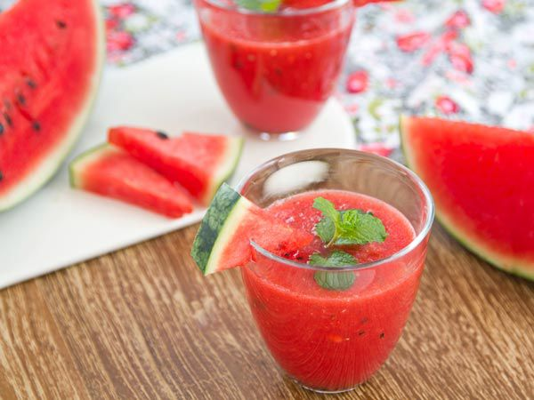

Jus Semangka Jeruk Nipis Mint

Buah semangka ini merupakan buah yang memiliki kulit sangat tebal sekali, namun sangat mudah jika dikupas. Buah semangka banyak sekali macam dan bentuknya, ada buah semangka dengan daging berwarna merah dan ada juga yang berwarna kuning. Bentuknyanya pun beragam ada yang lonjong dan ada juga yang berbentuk bulat. Buah semangka ini tidak hanya bisa dinikmati secara langsung ketika sudah matang, tetapi bisa dijuga dinikmatinya dengan dibuat minuman terlebih dahulu seperti dibuat minuman jus buah semangka. Minuman segar berbahan buah semangka ini sangat cocok dinikmati ketika sedang cuaca panas, apalagi ketika kita sedang lelah akibat seharian beraktifitas sangat cocok sekali, karena minuman ini akan mengembalikan stamina menjadi segar kembali.
Cara membuat: